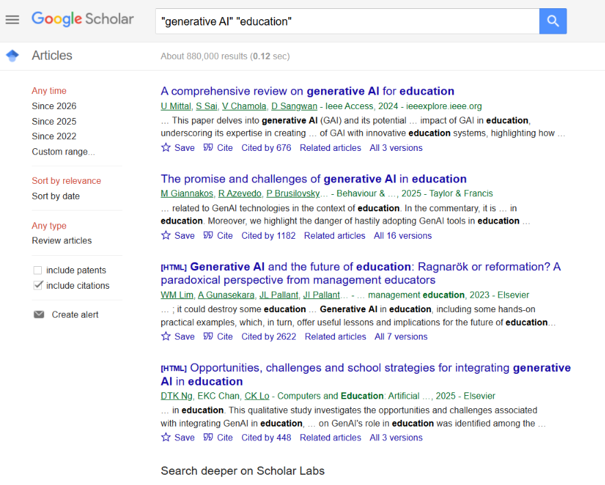
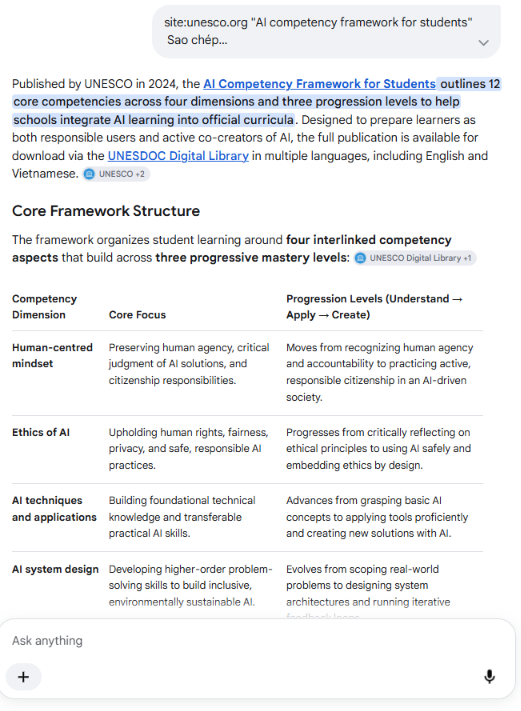
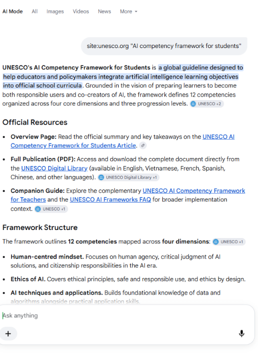
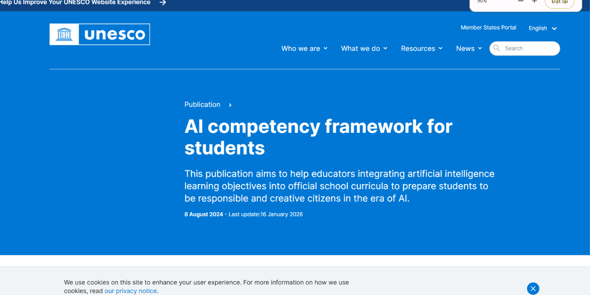

1. Mục tiêu bài tập
Luyện tập kỹ năng tra cứu học thuật nâng cao bằng cách kết hợp các toán tử tìm kiếm logic (Boolean operators); hình thành tư duy phản biện để đánh giá mức độ tin cậy, tính cập nhật, tính thẩm quyền của tác giả và độ phù hợp của tài liệu đối với mục tiêu học tập và nghiên cứu sư phạm.
2. Tóm tắt quá trình thực hiện
Chủ đề tìm kiếm: Ứng dụng AI có trách nhiệm trong giáo dục và hỗ trợ học tập. Em chuyển từ khóa tiếng Việt sang tiếng Anh, dùng Google Scholar để tìm nghiên cứu và Google Search để lọc theo tên miền; sau đó mở trang của tổ chức phát hành để kiểm tra tác giả, năm công bố và phạm vi tài liệu. Các ảnh dưới đây ghi lại kết quả tìm kiếm và bước đối chiếu với trang UNESCO.
Công cụ: Google Scholar, Google Search và trang chính thức của UNESCO. Phần tóm tắt tự động trên trang tìm kiếm chỉ giúp định hướng; em kiểm tra lại nội dung ở nguồn gốc trước khi dùng.




Bảng toán tử tra cứu nâng cao
| Truy vấn minh họa | Mục đích & Ý nghĩa kỹ thuật |
|---|---|
"generative AI" "education" |
Tìm kiếm chính xác các tài liệu đồng thời chứa cả hai cụm từ chuyên ngành, tránh kết quả tản mạn. |
site:unesco.org "AI competency" |
Thu hẹp phạm vi tìm kiếm chỉ trên tên miền chính thức của tổ chức UNESCO nhằm bảo đảm tính pháp lý và uy tín. |
"digital competence" filetype:pdf |
Ưu tiên lọc trực tiếp các tệp định dạng PDF (báo cáo nghiên cứu, tài liệu khoa học hoàn chỉnh). |
"academic integrity" AI -advertisement |
Dùng toán tử trừ (-) để loại bỏ các trang quảng cáo thương mại, nội dung tiếp thị gây nhiễu. |
Bảng thẩm định và đánh giá nguồn tin
| Nguồn tài liệu & Tác giả | Mức độ tin cậy | Năm XB | Giá trị ứng dụng |
|---|---|---|---|
| UNESCO (2023) Guidance for generative AI in education and research |
Cao: Hướng dẫn do UNESCO phát hành; phù hợp để tham khảo chính sách, nhưng không thay thế nghiên cứu thực nghiệm cho mọi bối cảnh lớp học. | 2023 | Định hình nguyên tắc đạo đức, tính bao trùm và giới hạn của AI trong giáo dục đại học. |
| UNESCO (2024) AI competency framework for students |
Cao: Khung năng lực chính thức của UNESCO, nêu 12 năng lực thuộc 4 chiều; đây là tài liệu định hướng, không phải kết quả thử nghiệm tác động. | 2024 | Trình bày 12 năng lực thuộc 4 chiều và 3 mức phát triển, làm căn cứ tham khảo khi xác định mục tiêu học tập về AI. |
| Ủy ban châu Âu (2025) DigComp 3.0: Digital Competence Framework |
Cao: Khung tham chiếu do Ủy ban châu Âu/JRC công bố; hữu ích để đối chiếu năng lực số, nhưng được xây dựng theo bối cảnh châu Âu. | 2025 | Hệ thống hóa các nhóm năng lực số nền tảng, quản lý dữ liệu và an toàn trực tuyến. |
3. Sản phẩm cuối cùng
Tổng hợp các cú pháp toán tử tìm kiếm và bảng thẩm định nguồn thông tin học thuật theo tiêu chí rõ ràng, dễ đối chiếu và kiểm chứng bằng các nguồn đáng tin cậy.
Nội dung được sắp xếp theo trật tự logic: xác định mục tiêu, đánh giá độ tin cậy, kiểm tra tính cập nhật và xác định giá trị sử dụng trong học tập.
UNESCO (2023) · UNESCO (2024) · European Commission (2025) · Google Search Help